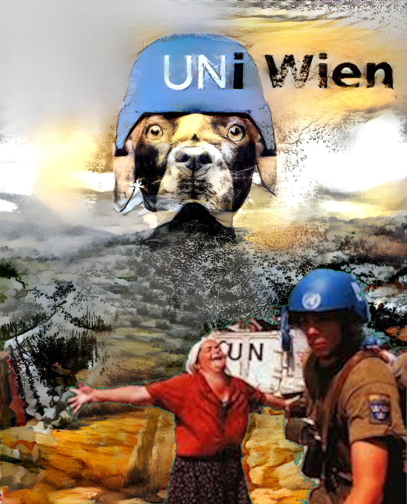

The Dog over Srebrenica
T here exists a professor at the University of Vienna, who receives a salary and is publicly celebrated by the institution.
This individual publicly denies genocide on TV, writes genocide-denying Islamophobic studies for an entity that is allied with Putin, and writes Islamophobic articles discrediting the International Court of Justice while blaming the victims of genocide.
We asked the University of Vienna to give us an answer to all of this. We received a Viennesque response, an answer void of substance that is insulting in its form and by its content. It is insulting in its form because it did not include basic letter-writing etiquette that children learn in elementary school: proper salutation, signature on the end, and address. It is insulting by its content because the evidence is overwhelming that their member, under the name of their institution, is denying genocide.
The University of Vienna (UV) is aware of the importance of communication. It invests into the research of the emotional impact communication has on dogs, which is very noble:
“what does a dog feel when its owner happily greets another dog”
Our legal advisers expressed disbelief that an institution such as the UV could degrade and discredit itself in such a manner. Therefore, we addressed the UV again to make sure that this is not some bureaucratic mistake.
Here is our second letter to the UV. We did not obtain an answer to it. This makes their previous answer to us into a genocide artifact.
It is an artifact of genocide because it embodies the same spirit of the UN official position that Srebrenica was a protected area and a safe haven. It embodies the spirit of legalization of genocide which is genocidal in itself. It internalizes the spirit of the Obmana (Swindle in Bosnian) that characterizes the genocide in Bosnia.
Furthermore, it reflects the overall feeling of superiority where the other side is perceived as so inferior that it doesn't even deserve to be greeted in a proper way, evoking echoes of the European past nobody wants to relive.
This exemplifies and amplifies the perceptions about the racially motivated Islamophobic complicity in the genocide: the Europeans sat idly watching the mass murder live on TV for four years, while strictly enforcing a weapons embargo imposed on the victims, preventing their self-defense.
How is all this possible? How can such an important institution allow itself to insult 1.6 billion members of a world religion by letting its professor disgrace their dead and then to write such a letter?
Apparently, because this one individual is more valuable to the UV than the feelings and dignity of a quarter of the earth's population. Again, how is this possible?
They are highly intelligent people, and they think they can get away with the legalization of genocide because of the situation in Bosnia.
Imagine visiting the Dachau death camp in 1972 to pay respect to murdered people there.
You arrive in Germany that the Allies bombed and liberated, however, there is an entity there called Republic Germanska. Dachau is located in that entity. There are statues of war criminal Hitler everywhere... That entity gets financial support of the International Community to keep it afloat. The international community officially states that there was a genocide in Dachau, however, it doesn't do anything to remove Hitlers statues. Then there arrives a professor from the University of Vienna and writes a study for the Republic of Germanska and claims there was no genocide. University of Vienna then writes a Viennesque answer to concerned observers claiming they recognize that Holocaust did take place, etc.
This is the situation in Bosnia.
The situation in Austria is very serious. Conspiracy theories (“political Islam”, “creeping Islamisation”) are being used to criminalize Islam and even to target scholars investigating Islamophobia. According to the Austrian authorities, the term Islamophobia is a “fighting term” of the Muslim Brotherhood that wants to take over the government. This is en par with the conspiracy theory about ”The Protocols of the Elders of Zion” that motivated the Holocaust.
This letter from UV represents the last stage of the Bosnian Genocide, it’s denial and it shows the selective application of rules in Austria.
Consequentially, we are afraid that it could represent the first stages of a new genocide. Undoubtedly, all this shows that degenocideification did not take place in Austria after WW2. Hence, we are very concerned that the Institute for the Genocide Research Canada in the year 2072 is going to get the following answer from the UV:
"...there is no factual basis that 20 million Muslims existed in the EU in the year 2022..."